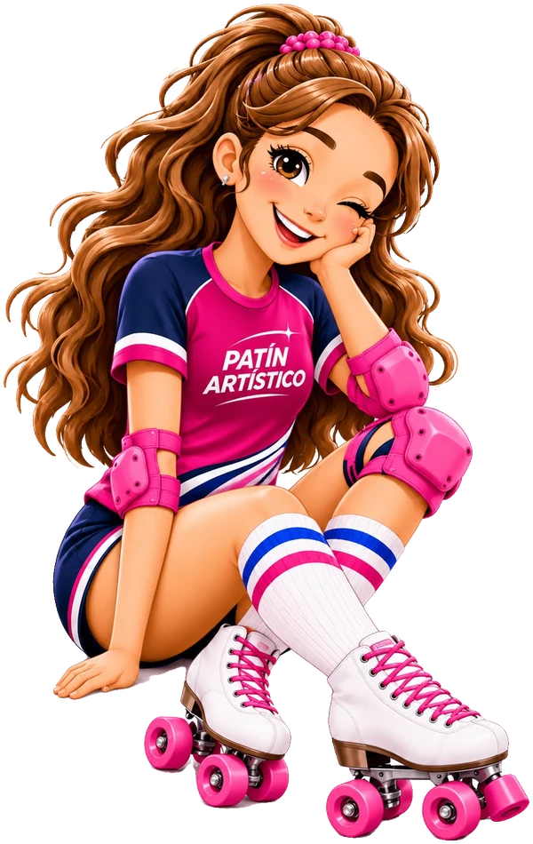

Así fue el show 2025
La magia se vive sobre ruedas
Una pista, cientos de sueños y una noche que quedó grabada en nuestros corazones.
Porque hay momentos que se viven una vez, pero se sienten para siempre.
El año pasado vivimos una noche que jamás imaginamos olvidar…
Miles de emociones, cientos de sueños y corazones latiendo juntos…
Hubo miradas que lo dijeron todo y lágrimas que no pudimos contener…
Y entre tantos aplausos, sonrisas y emociones, deseamos que esa noche no terminara jamás…
Porque hay momentos que se viven una vez, pero se sienten para siempre…
Y este 13 de diciembre, una nueva historia está por comenzar.
¡Vení a vivir la magia!
Domingo 13 de diciembre · Estadio Arena
Cronograma del show
Doce números y una sola noche. Buscá el de tu patinadora y quedate hasta el saludo final.

Domingo 13 de diciembre
Tus entradas, con QR
Comprás acá, pagás por transferencia y el QR te llega al mail al instante. El día del show lo mostrás en la puerta desde el celular.
- Elegís tus entradasCon tu nombre, tu DNI y tu mail.
- TransferísTe damos un CVU para esa compra: pagás desde tu banco o tu billetera virtual.
- Te llega el QRAl mail, al instante. Uno por persona, para mostrar en la puerta.
Transferí desde una cuenta a tu nombre (la del DNI que cargás): así el pago se reconoce solo y las entradas salen al instante. Comprá solo en esta página: nunca te vamos a pedir claves ni datos de tu tarjeta.

Un show donde la magia, el patinaje y los sueños se viven en la pista
Organiza EPAEscuela de Patín Artístico
3 sedes, una sola pasión
Donde los sueños se construyen en equipo

¡Te espero en la pista el 13 de diciembre!
Torneos, entrenamientos y medallas
Todo el año, sobre ruedas
Las patinadoras de EPA en los torneos y entrenamientos de 2025 y 2026. Tocá una foto para verla grande.
Cómo llegar
Estadio Arena, Villa Carlos Paz
Preguntas frecuentes
Todo lo que necesitás saber
¿Cómo compro las entradas?
Tocás «Entradas», elegís cuántas y cargás tu nombre, tu DNI y tu mail. Te damos un CVU para transferir y, apenas entra la plata, te llegan los QR al mail.
¿Cómo pago?
Por transferencia, desde tu banco o tu billetera virtual (Mercado Pago, Ualá, Naranja X, MODO o cualquier banco), desde una cuenta a tu nombre. Mientras pagás, tu lugar queda guardado.
¿Y si transfiero desde otra cuenta?
El pago se reconoce solo cuando la cuenta que transfiere es del mismo DNI que cargaste. Si pagás desde la cuenta de un familiar, cargá el DNI de esa persona. Si ya pagaste desde otra, no transfieras de nuevo: la escuela lo asigna a mano.
¿Dónde están mis entradas?
Te llegan al mail apenas se acredita el pago, una con QR por persona. Si no las ves, revisá Spam o Promociones, o buscalas en Mis entradas con tu mail y tu DNI.
¿Hay que imprimirlas?
No: mostrás el QR desde el celular. Hacele una captura antes de ir, por si en el estadio no hay señal. Cada QR sirve para entrar una vez.
¿Tenés otra duda?
Escribinos por WhatsApp y te respondemos: abrir el chat.